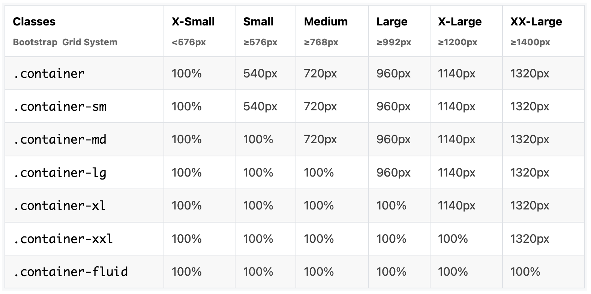

I am not wrapping everything in container divs to show the effect of the different widths
It's important to have most elements in divs and assign the container, container-{breakpoint} or container-fluid class to the div
-
container - With the container class, the container has a max-width at each responsive breakpoint
-
container-{breakpoint} - With the container-{breakpoint} class, the container has a max-width until the specified breakpoint; breakpoints are sm, md, lg, xl, xxl
-
container-fluid - With the container-fluid class, the container has max-width always
An easier to way to understand that is with this image from tutorialrepublic
